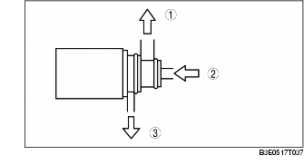

Shift solenoid D, and E (on/off type) function • ON/OFF type solenoid valve switches the supply drain of output port according to the electrical current flow switching. 1 Output port 2 Supply port (solenoid reducing pressure) 3 Drain